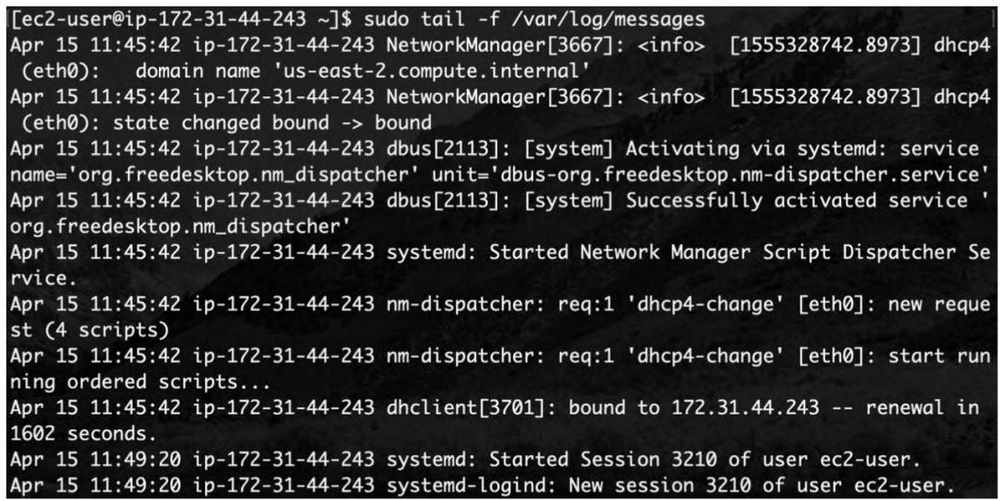

首页 > 编程笔记
日志（Log）到底是什么？
日志在企业 IT 服务中常常发挥重大作用。软件产品一旦投入使用，后期将持续输出日志，这些日志同样需要进行持续维护。
机器数据通常由系统或程序产生。
程序开发者为监控程序执行过程，会让程序在执行完一步或几步操作后输出相应的执行结果，该结果通常会记录系统或程序在什么时间、哪个主机、哪个程序上执行了什么操作及出现了什么问题等信息，这些信息被称为机器数据，即日志（Log）。
当系统、程序或硬件设备出现原因不明的错误或故障时，通过查看日志能够快速定位错误或故障的原因。
日志记录过多会影响设备性能。日志记录和存储均要占用相应资源，很多公司为使程序运行更加流畅而关闭日志记录。当然，在程序出现错误时，由于没有相应记录，这些公司的程序维护往往更加困难。
开发者可以对日志记录的信息种类进行定义，如只记录用户的身份验证信息。但是，日志记录过少将不利于后期维护。
越精细的日志记录越能完整地展现程序的每一步操作，后期的程序运行维护（简称“运维”）人员越容易在程序出现错误时顺利进行维护。由于程序的开发和运维通常由不同团队的人员负责，良好的日志记录无疑会为运维人员的后续工作提供极大的便利。
在企业实际生产环境中，不止日志记录需要制定策略。大型机构可能会使用多个集群来支撑整个业务架构，有些企业还可能拥有 App、网站等不同业务线，业务架构的复杂性使得企业使用的集群设备的型号五花八门。设备生产商不同，则记录日志的格式不同。那么，采集这些由不同型号的设备所产生的不同格式的日志，并将其集中处理、制作成能够指导生产决策的数据报表便成了一个不小的问题。
日志生态系统，有时也被称为日志基础设施，是实现日志数据的生成、过滤、格式化、分析和长期存储等功能的生态系统。建设这个系统的最终目标是利用日志来解决问题，需要解决的问题取决于企业的业务及业务运行环境。
在这样的背景下，日志数据的优势凸显。日志是网络监管部门用来监督企业的有力工具，日志安全审计是众多企业业务发展的必备条件。此外，日志数据几乎覆盖了机器所有执行动作，通过日志能够满足运维监控、业务分析等多种统计分析的需求。
随着企业的不断发展，日志的价值挖掘也会越来越深入。
日志的基础价值在于资源管理、入侵检测及故障排查。
初创型公司在业务发展到一定阶段后，会设置专门的运维岗位，对公司网站的可用性负责。运维人员一般使用专业的Linux服务器，并使用命令行工具来管理服务。这时，使用系统自带的日志分析工具就可以实现基础的系统故障排查。无论是在网络层面的故障，还是在安全层面、应用层面的故障，基本都可以从日志中发现端倪。
使用 Linux 系统命令行工具查看日志如图1所示。
随着企业发展壮大，产生的日志数据越来越多，能从日志数据中挖掘的价值也越来越大。相应地，日志的作用由单纯的监控告警，逐渐转向数据分析和智能运维。
总体而言，日志的作用可以概括为如下几个方面。
日志是什么？
在日常生活中，日志是指类似日记的日常记录。随着互联网的迅猛发展，日志被越来越多地用于指代机器数据。机器数据通常由系统或程序产生。
程序开发者为监控程序执行过程，会让程序在执行完一步或几步操作后输出相应的执行结果，该结果通常会记录系统或程序在什么时间、哪个主机、哪个程序上执行了什么操作及出现了什么问题等信息，这些信息被称为机器数据，即日志（Log）。
当系统、程序或硬件设备出现原因不明的错误或故障时，通过查看日志能够快速定位错误或故障的原因。
日志生态系统
日志中记录的信息种类繁多，例如：- 当用户访问网站时，用户端与服务器端建立连接需要经过三次握手验证；
- 当用户登录网站时，网站需要获取用户的身份验证信息、登录时间等信息；
- 甚至当用户每次获取网页资源时也会被记录，以上这些信息或行为都会以日志的形式被记录下来。
日志记录过多会影响设备性能。日志记录和存储均要占用相应资源，很多公司为使程序运行更加流畅而关闭日志记录。当然，在程序出现错误时，由于没有相应记录，这些公司的程序维护往往更加困难。
开发者可以对日志记录的信息种类进行定义，如只记录用户的身份验证信息。但是，日志记录过少将不利于后期维护。
越精细的日志记录越能完整地展现程序的每一步操作，后期的程序运行维护（简称“运维”）人员越容易在程序出现错误时顺利进行维护。由于程序的开发和运维通常由不同团队的人员负责，良好的日志记录无疑会为运维人员的后续工作提供极大的便利。
在企业实际生产环境中，不止日志记录需要制定策略。大型机构可能会使用多个集群来支撑整个业务架构，有些企业还可能拥有 App、网站等不同业务线，业务架构的复杂性使得企业使用的集群设备的型号五花八门。设备生产商不同，则记录日志的格式不同。那么，采集这些由不同型号的设备所产生的不同格式的日志，并将其集中处理、制作成能够指导生产决策的数据报表便成了一个不小的问题。
日志生态系统，有时也被称为日志基础设施，是实现日志数据的生成、过滤、格式化、分析和长期存储等功能的生态系统。建设这个系统的最终目标是利用日志来解决问题，需要解决的问题取决于企业的业务及业务运行环境。
日志的作用
由于近些年数据的价值挖掘受到越来越多的重视，利用日志中的信息能做的事情也越来越多。很多互联网公司通过页面埋点来获取用户信息以辅助运营，如通过记录用户在公司网站上的点击操作，获取用户兴趣点，进行个性化的推送等。在这样的背景下，日志数据的优势凸显。日志是网络监管部门用来监督企业的有力工具，日志安全审计是众多企业业务发展的必备条件。此外，日志数据几乎覆盖了机器所有执行动作，通过日志能够满足运维监控、业务分析等多种统计分析的需求。
随着企业的不断发展，日志的价值挖掘也会越来越深入。
日志的基础价值在于资源管理、入侵检测及故障排查。
初创型公司在业务发展到一定阶段后，会设置专门的运维岗位，对公司网站的可用性负责。运维人员一般使用专业的Linux服务器，并使用命令行工具来管理服务。这时，使用系统自带的日志分析工具就可以实现基础的系统故障排查。无论是在网络层面的故障，还是在安全层面、应用层面的故障，基本都可以从日志中发现端倪。
使用 Linux 系统命令行工具查看日志如图1所示。

图1：使用 Linux 系统命令行工具查看日志
图1：使用 Linux 系统命令行工具查看日志
随着企业发展壮大，产生的日志数据越来越多，能从日志数据中挖掘的价值也越来越大。相应地，日志的作用由单纯的监控告警，逐渐转向数据分析和智能运维。
总体而言，日志的作用可以概括为如下几个方面。
1) 故障排查
通过日志可对系统进行实时健康度监控，系统日志记录程序Syslog就是为这个目的而设计的。2) 数据分析
通过对业务系统日志进行关联分析，可以掌握业务系统的整体运行情况，并可通过日志进一步掌握用户画像、用户访问地域、用户访问热点资源等信息，从而为业务平台的市场营销、销售策略等提供数据支撑。3) 安全合规审计
根据国家网络安全法等级保护要求，需要对安全设备日志进行集中存储和分析。4) 内网安全监控
很多企业的信息泄露源于内部，使用日志进行用户行为分析以监控内网安全，已成为行业共识。5) 智能运维
随着大数据时代的到来，数据管理和分析方案越来越智能，自动化运维已逐渐普及。机器数据作为智能运维的基础数据，必将发挥越来越重要的作用。关注公众号「站长严长生」，在手机上阅读所有教程，随时随地都能学习。内含一款搜索神器，免费下载全网书籍和视频。

微信扫码关注公众号